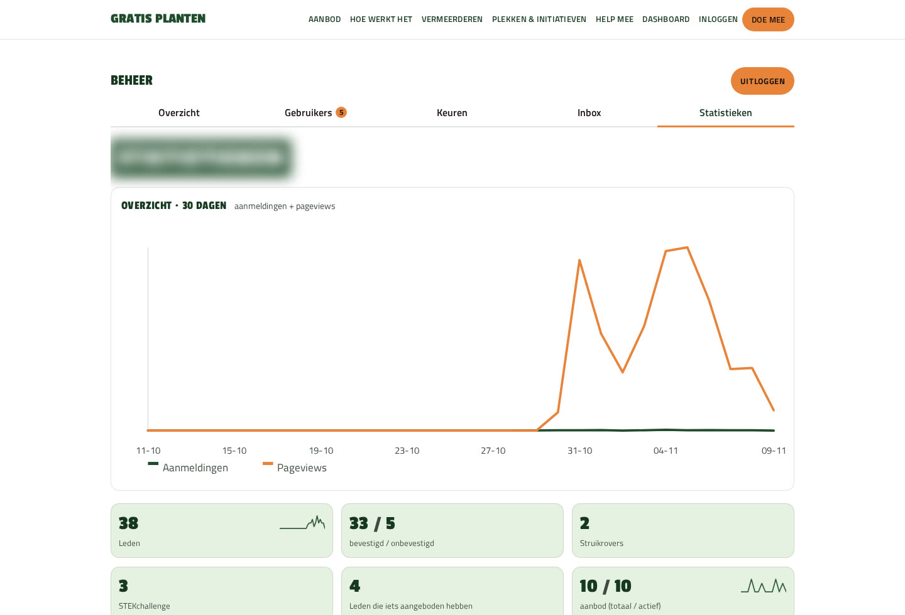
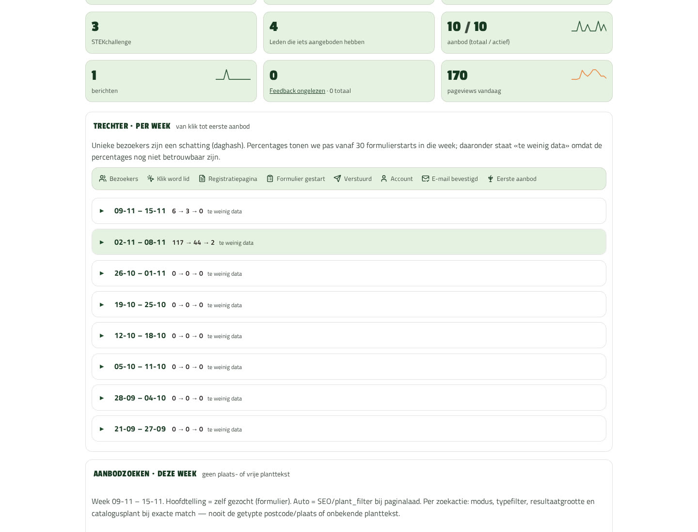
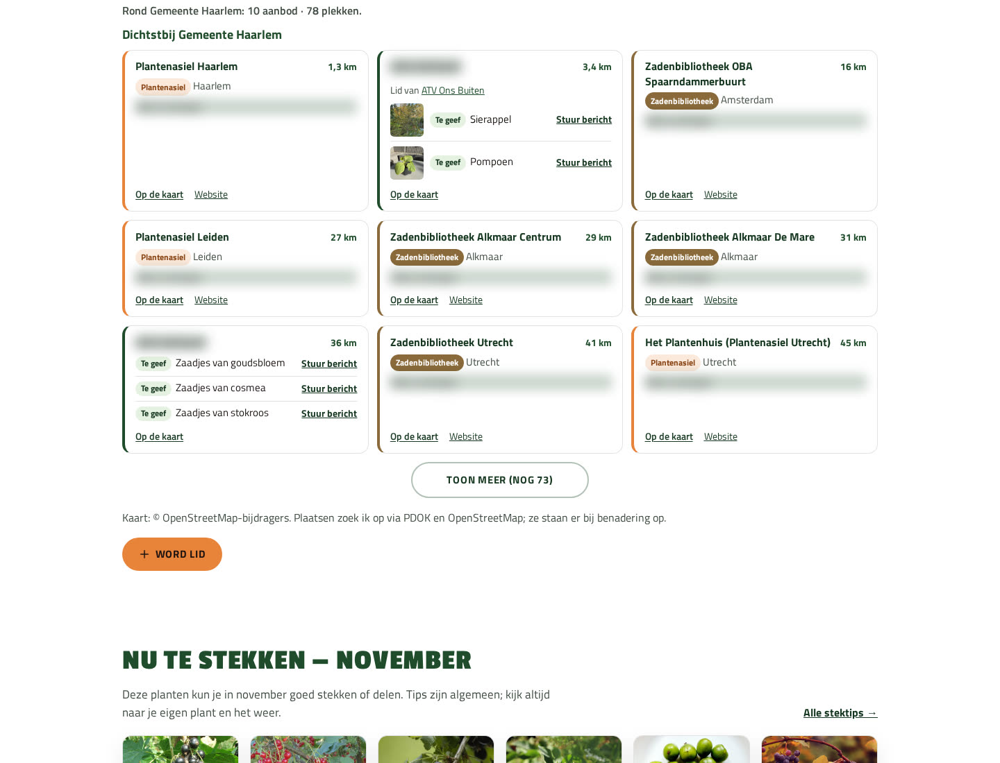
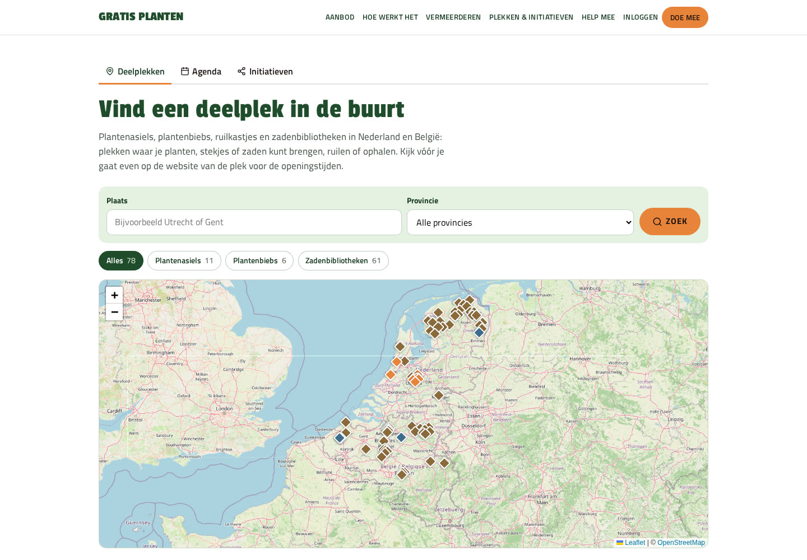
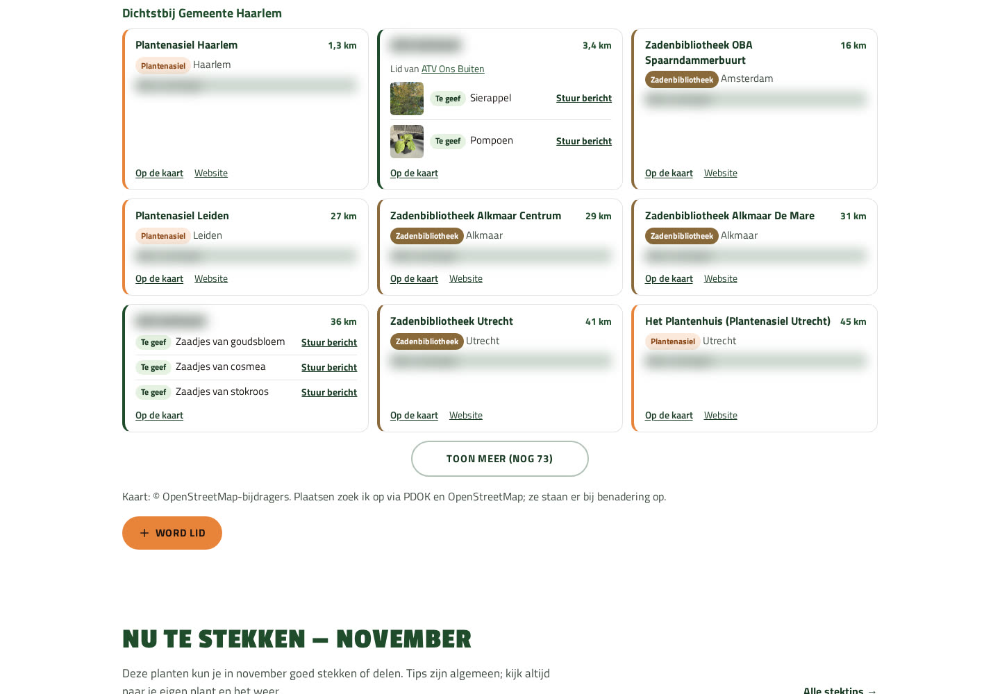
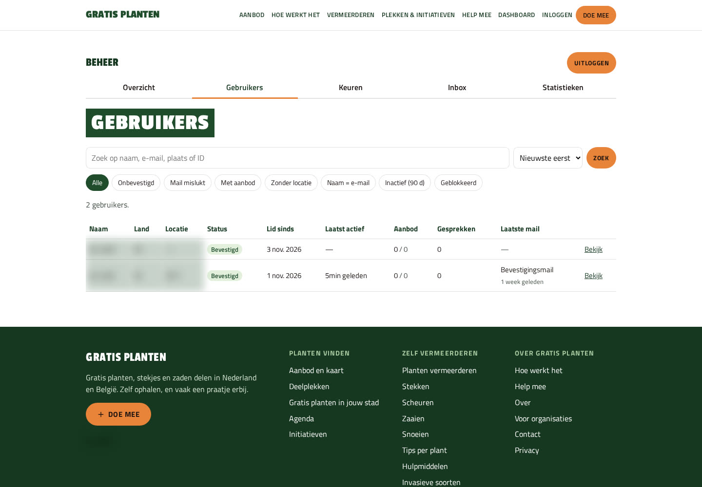

Case
Gratis planten
Mensen in de buurt met elkaar in contact brengen, en meer groen in de wereld. Ik bouwde het communityplatform voor gratis stekjes, planten en zaden — van eerste commit tot live product — en stuurde daarna bij op verkeer, aanmelden en gebruik.


Vraag
Hoe bouw je een platform dat mensen in de buurt echt gebruikt?
Gratis planten brengt buurtgenoten bij elkaar die stekjes, planten of zaden weggeven. Dat vraagt meer dan een brochure-site: leden moeten kunnen aanmelden, aanbod plaatsen, elkaar bereiken, deelplekken vinden en stektips lezen.
Ik bouwde het platform van begin tot livegang. Daarna ging het om tempo: wat werkt voor vindbaarheid en conversie, snel live zetten, meten, en weer bijsturen.
Resultaat
Van 153 naar 1.527 pageviews in zes dagen
Volgens het eigen dashboard van Gratis planten (gemeten 9 november 2026) ging het verkeer van 153 pageviews op de eerste dag (30 oktober) naar een piek van 1.527 op 5 november — ongeveer 10× in zes dagen. In de eerste elf dagen (30 oktober–9 november) telde het dashboard 9.038 pageviews; in de week 2–8 november 6.505. Sinds 29 oktober kwamen er 38 aanmeldingen bij.
Wat erin zit
Het platform, in onderdelen
Onderstaande onderdelen komen uit de CHANGELOG van het project (JorisPaarde/gratis-stekjes). Alleen wat daar staat, staat hier.
Aanbod plaatsen en vinden
- Leden plaatsen gratis stekjes, planten of zaden, met tot drie foto’s per item (GPS/EXIF wordt eraf gehaald).
- Zoeken op postcode of plaats en optioneel op plant; filters en een kaart met aanbod én vaste deelplekken.
- Berichten tussen leden over een aanbod, met inbox, ongelezen-teller en berichtmail (zonder berichtinhoud in de mail).
Accounts en aanmelden
- Aanmelden met e-mailbevestiging (signed, eenmalige link): double opt-in voordat iemand lid is.
- Korter aanmeldformulier (e-mail, wachtwoord, postcode NL/BE) en duidelijke «Word lid»-knoppen.
- Welkomstscherm na de eerste bevestiging, met een snelle route naar iets aanbieden.
Deelplekken, stadspagina’s en België
- Deelplekkenkaart met vaste initiatieven naast aanbod van leden.
- Stadspagina’s per plaats, met lokale kaart en deelplekken; overzicht per land en provincie.
- Sinds 31 oktober heel België: Belgische postcodes, deelplekken en stadspagina’s.
- Automatische stadspagina’s zodra een plaats live aanbod of een zichtbare deelplek heeft (CHANGELOG 0.78.20): 53 van de 65 pagina’s op prod zijn zo toegevoegd.
Agenda, initiatieven en posters
- Agenda voor stekjesmarkten, ruilbeurzen en ruildagen, met filters.
- Initiatiefpagina’s (onder meer Struikroven en STEKchallenge) met meedoen-knoppen en materiaal.
- Printbare posters en flyers met QR, plus een landingspagina voor tuinverenigingen.
Plantzoeker en stektips
- Plantzoeker op vermeerderen en stektips, met artikelen in de sitemap.
- Stektip-pagina’s per soort, met foto’s en vermeerdermethoden.
Beheer, meten en privacy
- Beheerpanel voor gebruikers, keuren (verenigingen, deelplekken, ervaringen), inbox en statistieken.
- Statistiekendashboard met pageviews en aanmeldingen; conversietrechter van klik tot eerste aanbod.
- Postlogboek met UTM-links voor Facebook-posts.
- Privacyvriendelijke pageview-teller (geen IP/UA/query) en AVG-export/wissen voor accounts.
- SEO-titels, sitemap, nette Nederlandse foutpagina’s (404/419/429/500), WebP-beelden, service worker/PWA-manifest.
Schermen
Van dashboard tot stadspagina
Een selectie uit het live platform en het beheer. Persoonsgegevens op de screenshots zijn onleesbaar gemaakt.
-

Statistieken: KPI’s en pageviews -

Conversietrechter per week -

Aanbod en deelplekken rond Haarlem -

Deelplekkenkaart Nederland en België -
Stadspagina Haarlem -

Resultatengrid met aanbodkaarten -

Beheer: ledenlijst -
Beheer: meldingen-inbox
Stand
Wat er nu staat, in cijfers
Dashboardcijfers: eigen statistieken van Gratis planten, gemeten 9 november 2026 (±11:46 Europe/Amsterdam). Repo-cijfers: GitHub API / CHANGELOG, zelfde dag.
- 9.038 pageviews in 30 oktober–9 november (dashboard).
- 153 → 1.527 pageviews van eerste dag tot piekdag; ongeveer 10× in zes dagen (dashboard).
- 6.505 pageviews in de week 2–8 november (dashboard).
- 38 aanmeldingen sinds 29 oktober; daarvan 33 bevestigd en 5 onbevestigd op het meetmoment (dashboard).
- 10 nieuwe aanbiedingen in 14 dagen, alle 10 actief (dashboard).
- 65 stadspagina’s in de productie-sitemap (waarvan 53 automatisch op basis van aanbod en deelplekken); bron: sitemap gratisplanten.nl, 9 november 2026 (GP 0.78.20).
- 88 deelplekken in de data (51 NL + 37 BE), o.a. zaadbibliotheken, plantenasiels en plantenbiebs (repo).
- 36 artikelen in de sitemap (CHANGELOG 0.61.0).
- 71 releases live in 9 dagen (v0.24.8 → v0.78.19) (repo); productie staat op 0.78.20.
- 318 commits op master (stand 9 november 2026 ±12:45) (repo).
Tempo
Van eerste commit tot snelle releases
De eerste commit was op 29 oktober 2026 (13:37 Europe/Amsterdam). Daarna volgden korte releases: 71 releases live in 9 dagen, van v0.24.8 (30 oktober) tot v0.78.19 (9 november); productie staat op 0.78.20. Een greep uit de mijlpalen:
- 29 okt — Basis, homepage, gestylede foutpagina’s, eerste SEO-stadspagina’s.
- 30 okt — Statistiekendashboard en privacyvriendelijke pageview-teller; eerste GitHub-tag.
- 31 okt — Heel België (postcodes + kaart); Belgische zadenbibs en BE-stadspagina’s.
- 1 nov — Stadspagina’s met zoekveld, omgeving zoeken en kaartlegenda.
- 2 nov — Help-mee met printbare posters en deelknoppen.
- 3–4 nov — Plantzoeker/stektips, Struikroven, initiatiefpagina’s en posters.
- 5 nov — STEKchallenge; conversiemeting, UTM/postlogboek en dashboardtrechter.
- 6–7 nov — Tracking-URL’s voor Facebook; landingspagina tuinverenigingen.
- 8–9 nov — Stadspagina Den Helder; trechter-UI aangescherpt; tag v0.78.19; 0.78.20 met automatische stadspagina’s live op prod (65 in sitemap).
AI
Hoe AI in elk onderdeel van dit project is ingezet
AI zit in meerdere onderdelen van Gratis planten. Ik houd de mens in de lus: verzending en livegang keur ik zelf goed. Geen black box die ongecontroleerd naar buiten gaat.
- AI stelt Facebook-posts op; elke post krijgt een UTM-link, zodat ik in het postlogboek zie wat een post oplevert.
- AI helpt mailinglijsten opbouwen en mailings versturen naar tuinverenigingen en andere organisaties — ongeveer 5 per werkdag, steeds na mijn goedkeuring.
- Binnenkomende mail wordt automatisch beantwoord of als concept voorbereid, zodat ik snel kan bijsturen of zelf versturen.
- AI helpt code bouwen, testen en releasen; in negen dagen gingen er 71 releases live.
- AI ondersteunt SEO-werk en stadspagina’s (tekst, structuur, uitbreiding), met controle voordat iets naar productie gaat.
Wat de klant daarvan merkt: snellere releases, meetbare social posts, minder handmatig copy-paste bij mail en content — zonder dat ik de eindcontrole loslaat.
Samenwerken
Wat betekent dat als je met mij werkt?
Dit project laat zien hoe ik werk als de vraag helder is en er snel iets live moet: eerst een werkend product, daarna korte releases, meten, en bijsturen op wat bezoekers echt doen.
- Snel iets bruikbaars live zetten, in plaats van lang wachten op een grote oplevering.
- Kort itereren: kleine releases, vaak dezelfde dag of dagen later weer bijsturen.
- Meten op het eigen dashboard (verkeer, aanmeldingen, trechter) en daarop beslissen wat eerst komt.
- Privacy en beheer meenemen vanaf het begin: teller zonder IP, AVG-export/wissen, keuren in beheer.
- AI inzetten waar het tempo of kwaliteit helpt, met mij als eindverantwoordelijke voor wat eruit gaat.
Doorlooptijd en scope verschillen per klantvraag. Deze case toont één traject — van eerste commit op 29 oktober tot 71 releases in negen dagen — niet een belofte voor elk volgend project.
Herkenbaar?
Een platform dat moet groeien na livegang?
Laat zien wie er moet meedoen, welk aanbod of welke community je wilt, en wat bezoekers zelf moeten kunnen doen. Dan kijk ik wat eerst verkeer of conversie oplevert.